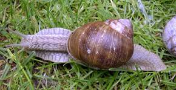
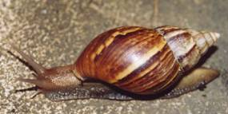
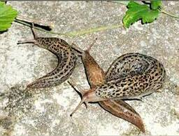

ORNAMENTAL PLANTS ::PEST :: SNAILS AND SLUGS
9. Snails and Slugs (Class Gastropoda: Phylum Mollusca)
Distribution and status: All over India. Occasionally become major pest and warrant control measures.
Host range : Vanilla, celery, lettuce, cabbage and a number of ornamental plants.
Common snail : Helix spp They are found in Himachal Pradesh, Uttar Pradesh, Andhra Pradesh, Bihar, Maharashtra and Orissa
|  |
Giant African snail: Achatina fulica - Found in coastal areas of Orissa, West Bengal, Assam, Tamil Nadu and Kerala.
|  |
Common garden slug: Laevicantis alte - Found in Punjab and Himachal Pradesh, feeds on number of ornamental plants like balsam, portulaca, pot- marigold, verbena, dahlia, cosmos, narcissus and lily.
Limax sp - Found all over India
|  |
Damage symptoms
Snails and slugs appear as sporadic pests in those places where damp conditions prevail. They may also appear in large number on roads and runways, creating problems during the taking- off or the landing of the aircraft. When their population in high, they may do serious damage.
Bionomics: Snails and slugs are soft-bodied, asymmetrical, spirally coiled and enclosed in a shell. They have a large flat foot used for creeping and do not have separate sexes The common snail breeds in spring and summer. It makes a hole of 1.24 cm in diameter and 3 cm in depth in damp soil and lays eggs in a loose mass of about 60. The eggs hatch within two weeks and the young snails start feeding upon tender plants. The shell increases in size with age and the snail is full-grown in about two years. Snails are seen at all hours, except during mid day when it is hot and dry. In winter, they stay in colonies and are found among rockeries, loose boards of fences, at the bottom of hedges, in rubbish heaps, etc.
Management
Low population can be collected and destroyed.
Dust 15 per cent metaldehyde dust or spray 20 per cent metaldehyde liquid or sprinkle 5 per cent metaldhyde pellets around infested fields.